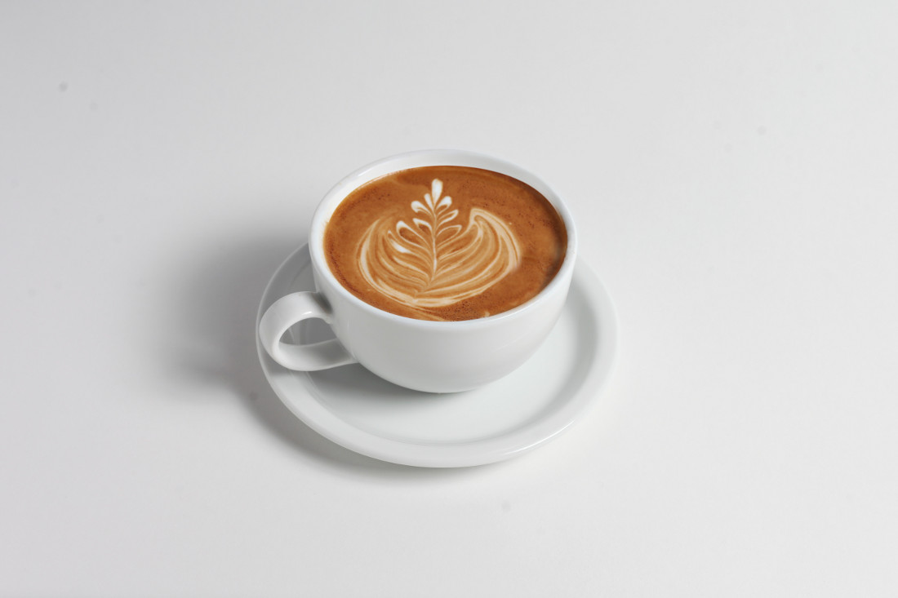

Latte & Coffee

Ingredients:
- 1 shot of espresso (or 1/2 cup of strong brewed coffee)
- 1 cup of milk
- 1-2 teaspoons of sugar (optional)
- Cocoa powder or cinnamon for garnish (optional)
Steps
- Brew a shot of espresso using an espresso machine or make
a strong cup of coffee using your preferred method.
- In a small saucepan, heat the milk over medium heat until
it starts to steam. Do not let it boil.
- Using a whisk or a milk frother, froth the milk until it
becomes thick and foamy. This can also be done by shaking
the milk vigorously in a sealed jar for about 30 seconds.
- Pour the hot espresso or coffee into a mug.
- Slowly pour the frothed milk into the mug, holding back the
foam with a spoon to allow more milk to enter. Once the milk
is poured, spoon the foam on top.
- If desired, sprinkle cocoa powder or cinnamon on top for extra
flavor and decoration.
- Stir in sugar if you prefer a sweetened latte.
- Your latte is now ready to enjoy! ;)
Remember, these recipes can be adjusted and customized
to suit your taste. Feel free to experiment with different
variations and additions to create your perfect cup of coffee
or latte.